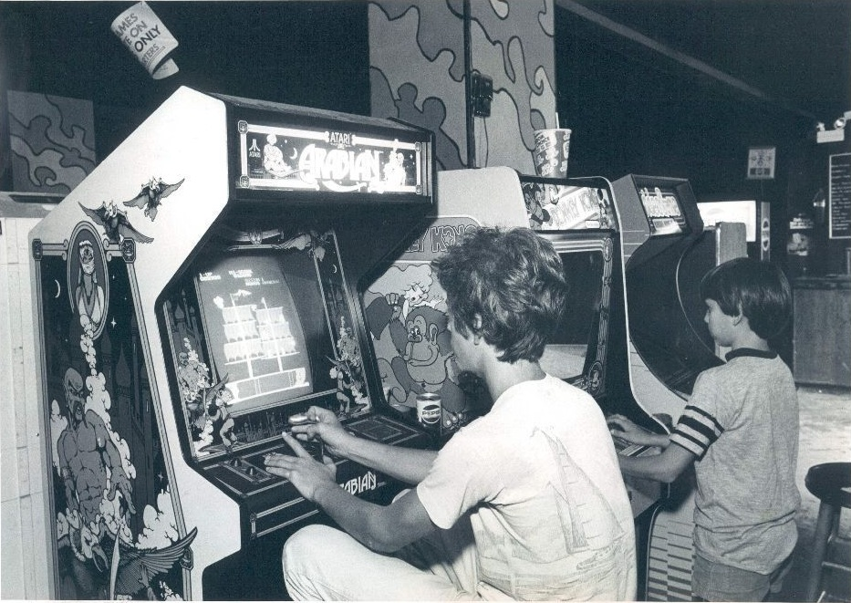

Video Game in 1970s
Compared to games in the ’80s, these games are very basic and child-like. But the fun wasn’t confined to the arcade. There was a revolution going on in the household as well. Suddenly, people had a whole new option when it came to home entertainment. People of all ages and pay grades were getting in on the fun. Game systems weren’t overly expensive. The average console was about $100 ($400 in today’s money), so the average middle class family could afford it. Many folks thought it would be a fad, that video games would pass because, honestly, they weren’t that much fun to play. Few could have predicted that it was a start of something that would change everything.